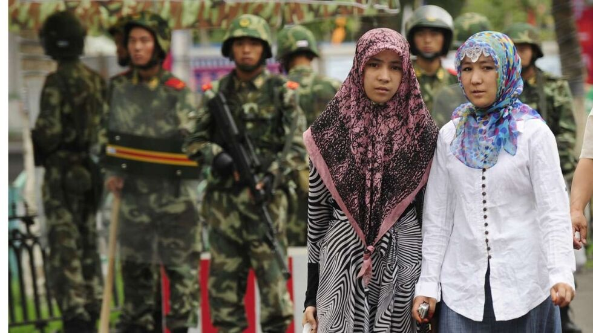

Why East Turkistan/“Xinjiang” Matters to India
In 1949, the ancestral homeland of the Uyghurs—East Turkistan—was occupied by the Communist Chinese army. Following the occupation, both armed and ideological resistance continued in the region.

In 1949, the ancestral homeland of the Uyghurs—East Turkistan—was occupied by the Communist Chinese army. Following the occupation, both armed and ideological resistance continued in the region. During this period, the Chinese government declared the “autonomy” status in order to suppress Uyghur demands for independence and to consolidate its own control.
East Turkistan was designated by the Chinese government as the “Xinjiang Uyghur Autonomous Region” on 01 October 1955. The so-called “Uyghur Autonomous Region” was never established as an institution based on the free will of the Uyghurs and other ethnic groups in East Turkistan. It is solely a governance system forcibly imposed by the Central Government of the People’s Republic of China.
The so-called “autonomy” granted by the Chinese government is nothing more than a political mask. In reality, it serves to erase Uyghur identity, forcibly assimilate the Uyghur people, and permanently annex East Turkistan as Chinese territory.
History shows us clearly: whether under the Manchu Empire, the Nationalist regime, or the Chinese Communist Party (CCP), none of the promises made to the people of East Turkistan were ever honoured. Every Chinese regime has sought to dismantle the region’s political and cultural autonomy.
After the founding of the East Turkistan Republic in 1944, the Communist occupation of 1949, and the hollow declaration of “autonomy” in 1955, Uyghurs have been subjected to systematic oppression, the erosion of their identity, and the crushing of their freedoms under the weight of state control.
Since Xi Jinping came to power in 2014, these policies have escalated into a full-scale campaign of genocide. United Nations assessments, independent investigations, the Uyghur Tribunal’s rulings, international reports, and the recognition of Uyghur genocide and crimes against humanity by 11 national parliaments—including the European Parliament—document the shocking reality: mass arbitrary detentions, forced labour, coercive birth control, and the deliberate destruction of Uyghur culture and heritage.
In the face of this ongoing atrocity, it has become undeniable that there is no lasting path for the Uyghurs to safeguard their identity, language, culture, and very existence other than through independence.
In 2016, the Western Theater Command (WTC) of People’s Liberation Army (PLA) was established by the People's Republic of China (PRC) as a part of the reorganisation of the PLA, with the aim of increasing political control over the PLA and making it an institution of significant combat capability.[1] The establishment of the WTC, the focus thereof being East Turkistan—“Xinjiang Autonomous Region” (XUAR) and “Tibet Autonomous Region” (TAR)—is of significant importance to the border conflict between India and China, as Chengdu and Lanzhou are now within the jurisdiction of the same command which possesses extensive military power.[2]
The relevance of East Turkistan and Tibet to India is further reinforced by the PRC’s investment into the transportation infrastructure in the region on top of the aforementioned military restructuring. In 2022, the PRC announced its plans to build a new highway between Lhunze/Tibet and Mazha/East Turkistan, which passes close to the disputed regions, such as the Depsang Plains and the Galwan Valley and Hot Springs on the Sino-Tibet border Line of Actual Control (LAC).[3] In addition, “Xinjiang”-Tibet Railway Company has been formed by the PRC to manage the construction of a strategic railroad between Lhasa/Tibet and Hotan/East Turkistan (Galwan Valley, centre of the military conflict of 2020 between the PRC and India, is governed by Hotan).[4] Furthermore, Highway G219—one of the longest highways in the PRC—passes through Aksai Chin, a region that is controlled by the PRC but is claimed by India.[5]
As a part of the Belt and Road Initiative (BRI), the China Pakistan Economic Corridor (CPEC) project was launched in 2015 to modernise Pakistan’s transportation infrastructure. The project connects the Xinjiang Uyghur Autonomous Region (“XUAR”) to Pakistani ports of Gwadar and Karachi to improve bilateral trade between the two countries. Furthermore, it fosters the integration of the South Asian countries.[6]
As East Turkistan is in the centre of both the WTC and the CPEC as part of the BRI, having a strict control over the region is of utmost importance for the PRC. For this reason, it is expected that as the CPEC advances, the PRC will increase the repression of the people it deems to pose a security threat to these projects, which includes the entire Uyghur population of the “XUAR”[7]. As a method to reinforce its authority, the Chinese Communist Party (CCP) designates the critical political actors in Hong Kong, East Turkistan, and Tibet, as well as the leadership in Taiwan as separatist who are supported by what is described as “external forces”, who are deemed to pose a serious threat to the CCP’s legitimacy and authority.[8] Another element that aims to strengthen the PRC’s control over East Turkistan and Tibet, as well as to provide logistical advantage in case of an armed conflict with India, is the transport and military corridor between Tibet and East Turkistan. The PRC is building several road and railroad lines to establish connection within Tibet, between Tibet and China, also between Tibet and East Turkistan, which would allow the PLA, People’s Armed Police (PAP), defensive forces in the border regions, and the militia to deploy swiftly if an incident occurs on the Indian border.[9]
This military restructuring and development of the transportation infrastructure in the region would also facilitate the use of surveillance and securitisation models by the PRC in East Turkistan and Tibet, under the pretext of security and stability. A security and forced assimilation system, which consist of a combination of hyper-securisation and militarisation elements, is practised in East Turkistan, after originally being formed in Tibet by the CCP official Chen Quanguo.[10] This system aims to destroy the roots and lineage of Tibetans and Uyghurs, severing their social ties. This has resulted in the imprisonment of at least one million Uyghurs and Kazakhs because of their ethnic origin and cultural background as well as religious beliefs.[11] The repression in East Turkistan and Tibet intensified significantly after the appointment of Chen Quanguo. The surveillance methods that were first tried in the TAR were subsequently deployed in the “XUAR”. Especially since 2016, the surveillance campaigns in East Turkistan have intensified substantially.[12]
Considering the reports of widespread mass DNA (deoxyribonucleic acid) collections in Tibet and East Turkistan, it can be concluded that the PRC authorities consider it imperative to expand grassroots level data collection and monitoring capacity in these regions.[13] Recently, the PRC has adopted the Law on the Promotion of Ethnic Unity and Progress, which requires all children to learn Mandarin and creates a legal ground to prosecute parents and guardians who are considered to transmit “detrimental” views to the ethnic harmony. According to some analysts this can lead to dispersal of neighbourhoods predominantly inhabited by minorities.[14]
In summary, due to its strategic location at the centre of the WTC, and the CPEC, East Turkistan is of significant importance to India in connection with its border conflict with the PRC. The importance of East Turkistan is amplified as the PRC is building new transportation infrastructure, which would provide them a logistical military advantage. For these reasons, it is anticipated that the PRC could increase the repression and surveillance of the Uyghur population in the near future. Since they are deemed as a threat, the PRC aims to “protect” its military interests against India as well as its commercial relationships with Pakistan as part of the BRI.
FOOTNOTES
Footnotes
- Saunders, P. C., and J. Wuthnow. (2016, April). China’s Goldwater-Nichols? Assessing PLA organizational reforms. Institute for National Strategic Studies, National Defense University Press. https://ndupress.ndu.edu/Portals/68/Documents/stratforum/SF-294.pdf
- Rajagopalan, R. P., and P. Mohan. (2020, February). PLA joint exercises in Tibet: Implications for India (ORF Occasional Paper No. 238). Observer Research Foundation. https://www.orfonline.org/public/uploads/posts/pdf/20230718000119.pdf
- Tibetan Review. (2026, March 10). China to build, upgrade Xinjiang–Tibet highways for greater power projection. https://www.tibetanreview.net/china-to-build-upgrade-xinjiang-tibet-highways-for-greater-power-projection/
- Ibid
- Duhalde, M., D. Wong, and L. Lee. (2020, July 2). “China–India border dispute”. South China Morning Post. https://multimedia.scmp.com/infographics/news/world/article/3091480/China-India-border-dispute/index.html
- Rauf, S., and A. Zeidan. (2026, February 18). “China-Pakistan economic corridor”. Encyclopedia Britannica. https://www.britannica.com/topic/China-Pakistan-Economic-Corridor
- Foreign Policy Centre. (2018, September 18). The China–Pakistan Economic Corridor (CPEC) and the security risks of infrastructural expansion. https://fpc.org.uk/the-china-pakistan-economic-corridor-cpec-and-the-security-risks-of-infrastructural-expansion/
- U.S. Department of Defense. (2025, December 23). Annual report to Congress: Military and security developments involving the People’s Republic of China 2025. https://media.defense.gov/2025/Dec/23/2003849070/-1/-1/1/ANNUAL-REPORT-TO-CONGRESS-MILITARY-AND-SECURITY-DEVELOPMENTS-INVOLVING-THE-PEOPLES-REPUBLIC-OF-CHINA-2025.PDF
- Desai, S. (2021, November 19). Infrastructure development in Tibet and its implications for India. Jamestown Foundation. https://jamestown.org/infrastructure-development-in-tibet-and-its-implications-for-india/
- International Campaign for Tibet. (2018, December 19). The origin of the ‘Xinjiang model’ in Tibet under Chen Quanguo: Securitizing ethnicity and accelerating assimilation. https://savetibet.org/the-origin-of-the-xinjiang-model-in-tibet-under-chen-quanguo-securitizing-ethnicity-and-accelerating-assimilation/
- Ibid
- European Foundation for South Asian Studies. (2022, February). Language, religion, and surveillance: A comparative analysis of China’s governance models in Tibet and Xinjiang (EFSAS Study Paper No. 2). https://www.efsas.org/publications/study-papers/comparative-analysis-of-governance-models-in-tibet-and-xinjiang/
- Human Rights Watch. (2022, September 5). China: New evidence of mass DNA collection in Tibet. https://www.hrw.org/news/2022/09/05/china-new-evidence-mass-dna-collection-tibet
- Bicker, L. (2026, March 12). “China approves ‘ethnic unity’ law requiring minorities to learn Mandarin”. BBC News. https://www.bbc.com/news/articles/cp9meeek051o